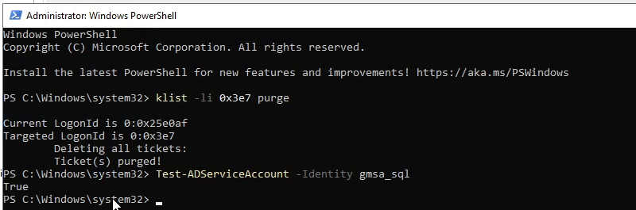
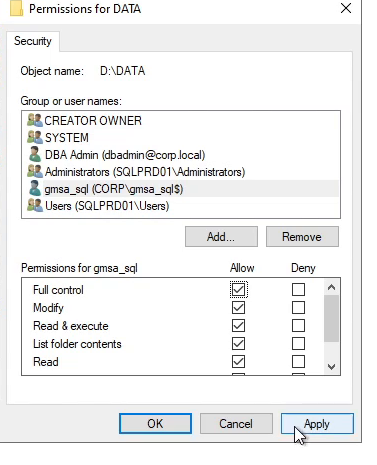
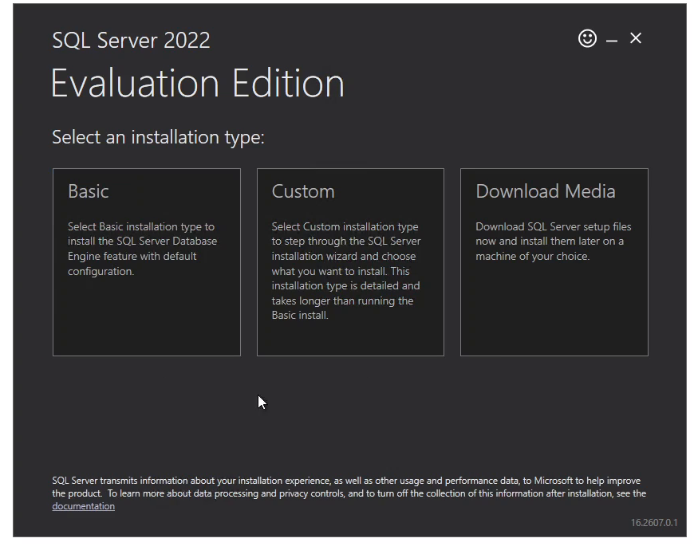
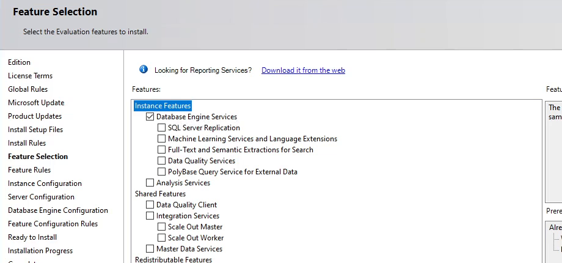
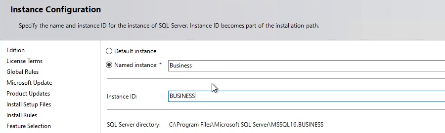
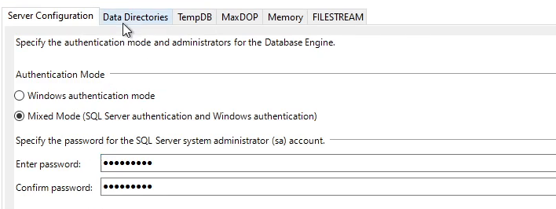
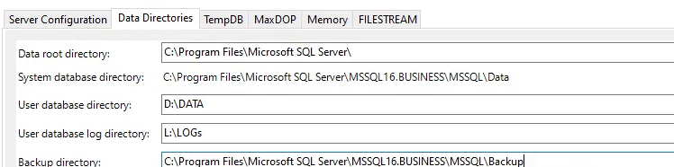
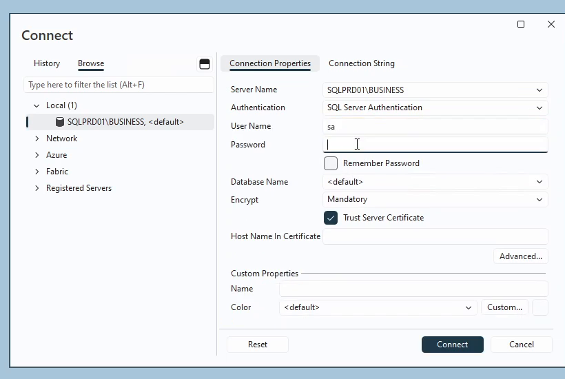

تنزيل SQL Server 2022 صح من أول مرة
الدليل المكتوب للفيديو: كل الخطوات بالترتيب الأسهل للتطبيق، مع الـ commands جاهزة للنسخ.
▶ شوف الفيديو⬇ PDFSQLPRD01\BUSINESS1433 ثابتCORP\gmsa_sql$ (بدون password)D:\DATAL:\LOGSكل الأسماء هون أسماء lab (domain corp.local، DC اسمه DCPRD01). حط أسماءك مكانها.
0قبل ما تبدأ
- سيرفر Windows Server عليه static IP وjoined على الـ domain.
- User إله صلاحية Domain Admins على الـ domain controller.
- Disk للـ data (
D:) و disk للـ log (L:). منفصلين عشان ما يزاحموا بعض. - الـ firewall: بالـ lab مطفي. لو شغال عندك، افتح TCP 1433.
1الـ gMSA على DCPRD01
ليش؟ الـ domain user العادي إله password لازم حدا يحفظه ويغيّره. الـ gMSA الـ Windows بيعمله الـ password (240 حرف) وبيغيّره لحاله كل 30 يوم، وما حدا بيعرفه.
أ. افتح PowerShell بـ Run as administrator وتأكد إذا في KDS root key. لو ما رجع إشي، ما في:
Get-KdsRootKey
ب. اعمل الـ key:
Add-KdsRootKey -EffectiveTime ((Get-Date).AddHours(-10))
-EffectiveTime من أي وقت الـ key بيشتغل. (Get-Date).AddHours(-10) يعني قبل 10 ساعات، فبيشتغل فورا.-EffectiveImmediately واستنى. احنا عنا DC واحد بالـ lab.ج. اعمل group للسيرفرات، عشان أي سيرفر جديد بس تضيفه عليه:
- Active Directory Users and Computers > right-click على Users > New > Group.
- الاسم
SQL_Servers. خلّي Global و Security (الـ default) > OK. - افتحه > Members > Add > Object Types علّم Computers > اكتب
SQLPRD01> OK.
د. اعمل الـ gMSA:
New-ADServiceAccount -Name gmsa_sql -DNSHostName gmsa_sql.corp.local -PrincipalsAllowedToRetrieveManagedPassword SQL_Servers
-Name اسم الـ account. -DNSHostName الاسم مع الـ domain. -PrincipalsAllowedToRetrieveManagedPassword مين بيقدر يستعمله: الـ group تبعنا.هـ. على SQLPRD01 (PowerShell بـ Run as administrator): امسح الـ Kerberos tickets عشان السيرفر يشوف إنه صار بالـ group، وبعدين جرّب:
klist -li 0x3e7 purge Test-ADServiceAccount -Identity gmsa_sql
-li 0x3e7 الـ session تبع الكمبيوتر نفسه (SYSTEM). purge امسح. -Identity الـ account اللي بدنا نجربه.
2الـ folders والصلاحيات على SQLPRD01
- اعمل folder
D:\DATAو folderL:\LOGS. - على كل واحد: right-click > Properties > Security > Edit > Add.
- Object Types علّم Service Accounts > اكتب
gmsa_sql> Check Names > OK. - علّم Full control > Apply > OK. (لو بدك أقل: Modify بكفي.)

3الـ setup على SQLPRD01
نزّل SQL Server 2022 من Microsoft Evaluation Center وشغّله:

اعمل Mount للـ ISO > right-click على setup.exe > Run as administrator > Installation > New SQL Server standalone installation.
| الصفحة | شو بتختار |
|---|---|
| Edition | Evaluation |
| Microsoft Update | اختياري، تركناه لأنه بطيء |
| Feature Selection | Database Engine Services بس |
| Instance Configuration | Named instance: BUSINESS |
| Server Configuration | الـ Agent والـ Engine: CORP\gmsa_sql$، password فاضي، Automatic. الـ Browser: Disabled. وعلّم Grant Perform Volume Maintenance Task |
| Collation | خليه default |
| Database Engine | Mixed Mode + password للـ sa + Add Current User |
| Data Directories | Data: D:\DATA، Log: L:\LOGS |
| TempDB، MaxDOP | خليهم default |
| Memory | Recommended + علّم Accept |
الـ Edition:
الـ Features: الـ Database Engine فيه 99% من اللي بتحتاجه. أي feature ثانية بتضيفها بعدين.

الـ Instance:
SQLPRD01. لو عندك instance واحد، هاد أسهل
Named: بتتصل بـ SQLPRD01\BUSINESS. اخترناه عشان نشرح خطوة الـ port

الـ Service accounts: لاحظ الـ $ بالآخر والـ password فاضي، هاي فكرة الـ gMSA. الـ Automatic يعني بيشتغل لحاله بعد الـ restart. الـ Browser بنطفيه لأنه رح نثبّت الـ port.
Perform Volume Maintenance Task = Instant File Initialization: الـ restore وكبر الملفات بيصير أسرع بكثير، لأنه ما بيعبّي المساحة أصفار أول.
الـ Authentication:


4ثبّت الـ port على 1433 Configuration Manager
ليش؟ الـ named instance ممكن ياخذ port ثاني بعد الـ restart، والـ application بتتصل على port ثابت. Default instance؟ اقفز عن هالخطوة.
- افتح SQL Server 2022 Configuration Manager. تحت SQL Server Services لازم تشوف الـ instance شغال تحت الـ gMSA.
- SQL Server Network Configuration > Protocols for BUSINESS > double-click TCP/IP > IP Addresses.
- انزل لآخر إشي، IPAll: امسح TCP Dynamic Ports، وحط TCP Port =
1433> Apply > OK. - SQL Server Services > right-click SQL Server (BUSINESS) > Restart.


SQLPRD01\BUSINESS,14335SSMS والاتصال
- نزّل SQL Server Management Studio من Microsoft. بـ Individual components ضيف Integration Services و Business Intelligence (للـ maintenance plans).
- افتح SSMS > Server Name > Browse > Local >
SQLPRD01\BUSINESS. - SQL Server Authentication، user
saوالـ password، علّم Trust Server Certificate > Connect.

6قبل الـ production
- الـ KDS key:
-EffectiveImmediatelyواستنى الـ 10 ساعات. - الـ edition: Enterprise أو Standard مع key.
- الـ firewall شغال، و TCP 1433 مفتوح.
- Certificate حقيقي بدل Trust Server Certificate.
- Disk ثالث للـ backups.
- اتصل بالـ Windows account تبعك، والـ sa للطوارئ بس.
لو صار مشكلة:
Test-ADServiceAccountرجّع False: تأكد إن السيرفر بالـ group، وأعد الـklist، أو اعمل restart.- ما لقيت
gmsa_sqlبالـ Add: بـ Object Types علّم Service Accounts. - مش قادر تتصل من جهاز ثاني: الـ port، الـ restart، الـ firewall، والفاصلة.